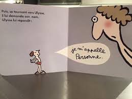

Comment t’appelles-tu ?
Je m’appelle : « personne »,
Un murmure discret au bord de l'horizon,
Un être d’ombre, fragile, sans prison,
Un rêve errant sous l’éclat des saisons.
Un être anonyme, qui aspire à vivre,
Sans le poids du joug, sans chaînes à survivre,
Libre des aléas que le destin décime,
Ni coupable, ni martyr, mais un cœur légitime.
Un être fier, qui ne ploie sous aucun orage,
Qui refuse les chaînes du remords, de l’outrage,
Sans s’excuser d’exister, sans faillir à sa flamme,
Dans l’éclat d’un regard, dans l’ardeur de son âme.
Un être libre, sans liens ni entraves,
Derrière ses pensées, des étoiles se lavent,
Un souffle d’esprit qui, loin des sévices,
Traverse le temps, indomptable, complice.
Je m’appelle : « personne », et pourtant je suis,
L’écho d’un monde, un frisson dans la nuit,
Un cri d’espoir qui, au vent se révèle,
Car dans le néant, mon cœur est éternel.
Djamel Metref
At Yenni le 4 juillet 2025

← Tous les poèmes